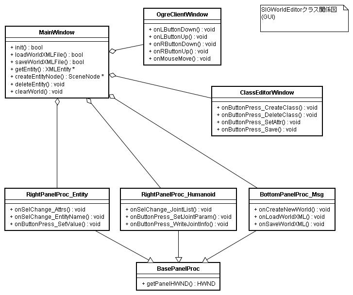

主要クラスの概要
ここではSIGWorldEditorを構成する主なクラスの概要を説明する．
大きく分けて
- 世界、エンティティ関連クラス
- GUI関連クラス
の2つに分けられる
1. 世界、エンティティ関連クラス
世界、エンティティを扱うのは次の5つのクラスである．また、これらの関連図を示す．
- XMLWorld
- XMLEntity
- XMLEntityClass
- XMLEntityClassManager
- XMLFileList

XMLWorld
XMLWorldは世界XMLファイルに対応するクラスである．
XMLWorldは世界内に存在するエンティティを保持する．
新しいエンティティの生成や、既存エンティティの削除、世界ファイルのロード(loadFromXML())、世界ファイルへのセーブ(saveToXML())が行える．
●主なメソッドの働き
-
loadFromXML
- 世界XMLファイルをロードする．
-
saveToXML
- 世界XMLファイルへセーブする．
-
getEntityNames
- 世界内に存在する全エンティティの名前を返す
-
getEntity
- エンティティ名からXMLEntityオブジェクトを引く
-
createEntity
- 世界内に新しいエンティティを生成する
-
deleteEntity
- エンティティを世界から削除する
XMLEntity
XMLWorld内に存在するエンティティの実体である．XMLEntityClassから生成されるインスタンスと言うこともできる．
●主なメソッドの働き
-
getName
- エンティティ名を得る
-
getAttrName
- 属性の名前を得る
-
getAttrValue
- 属性値を得る
-
setAttrValue
- 属性値を設定する
XMLEntityClass
XMLEntityClassは1つのエンティティ定義XMLファイルに相当するクラスである．
エンティティ定義の持つ複数個の属性定義を含む．属性定義を追加・削除・変更するためのメソッドも備える．
●主なメソッドの働き
-
loadFromXML
- エンティティ定義XMLファイルをロードする
-
saveToXML
- エンティティ定義をXMLファイルにセーブする
-
countAttrs
- 属性の個数を得る
-
getAttr
- 属性を得る
-
addAttr
- 属性を追加する
-
deleteAttr
- 属性を削除する
-
setAttrValue
- 属性値を設定する
XMLEntityClassManager
XMLEntityClassManagerは複数のXMLEntityClassを保持するコンテナ的クラスである．
新しいXMLEntityClassの作成、削除等はこのクラスが行う．XMLEntityClassからXMLEntityの生成（クラスからインスタンスの生成）も行う．また、エンティティ定義ファイル名とエンティティクラス名の対応もこのクラスが保持する
●主なメソッドの働き
-
loadXMLEntityFiles
- 複数のエンティティクラス定義XMLファイルを一度に読み込む
-
saveUpdatedEntityClasses
- 定義に変更のあったエンティティクラスをファイルにセーブする
-
createInstance
- エンティティクラスからXMLEntityインスタンスを生成する．
-
getEntityClass
- 指定のエンティティクラスを返す
-
getEntityClassNames
- すべてのエンティティクラスの名前を返す
-
addNewEntityClass
- 新しいエンティティクラスを追加する
-
deleteEntityClass
- エンティティクラスを削除する
XMLFileList
ワーキングディレクトリ内に存在する世界XMLファイル、エンティティ定義XMLファイルのリストを保持する．
●主なメソッドの働き
-
searchXMLFiles
- カレントディレクトリにある世界XMLファイル、エンティティ定義XMLファイルを検索する
-
getWorldFileNames
- 世界XMLファイル名のリストを返す
-
getEntityClassFileNames
- エンティティ定義XMLファイルのリストを返す
2. GUI関連クラス
GUI関連クラスには以下のものがある．
- MainWindow
- OgreClientWindow
- ClassEditorWindow
- RightPanelProc_Entity
- RightPanelProc_Humanoid
- BottomPanelProc_Msg
- BasePanelProc

MainWindow
MainWindowはSIGWorldEditorのメインウィンドウクラスである．
SIGWorldEditorの初期化から、メインループ、形状作成、その他主要な処理を行う、システムの中核となすクラスである．
また、他のすべてのウィンドウの親ウィンドウでもある．
●主なメソッドの働き
-
init
- SIGWorldEditorの初期化処理を行う
-
loadWorldXMLFile
- 世界XMLファイルを読み込み、世界の状況を画面上に復元する
-
saveWorldXMLFile
- 現在編集中の世界を世界XMLファイルにセーブする
-
getEntity
- 指定のエンティティを得る
-
createEntityNode
- 新しいエンティティを生成し、画面に表示する
-
deleteEntity
- エンティティを削除し、画面上から消す
-
clearWorld
- 世界をクリアし、すべての表示形状も消す
OgreClientWindow
メインウィンドウ上の、3次元世界表示部分のウィンドウである．
メインウィンドウの子ウィンドウとして作成される．Ogreライブラリはこのウィンドウ上に3次元物体を表示する．
3次元表示画面上でのマウスクリック、マウス移動などのイベントが発生した際の処理（イベントハンドラ）を持つ．
●主なメソッドの働き
-
onLButtonDown
- マウスの左ボタンが押された際に呼ばれる
-
onLButtonUp
- マウスの左ボタンが放された際に呼ばれる
-
onRButtonDown
- マウスの右ボタンが押された際に呼ばれる
-
onRButtonUp
- マウスの右ボタンが放された際に呼ばれる
-
onMouseMove
- 3次元表示画面上でマウスが移動した際に呼ばれる
ClassEditorWindow
クラスエディタウィンドウである．クラス定義の編集に関するメソッドを多数持つ．
●主なメソッドの働き
-
onButtonPress_CreateClass
- 新規エンティティクラスの作成ボタンが押されると呼ばれる
-
onButtonPress_DeleteClass
- エンティティクラスの削除ボタンが押されると呼ばれる
-
onButtonPress_SetAttr
- エンティティクラスの属性値設定ボタンが押されると呼ばれる
-
onButtonPress_Save
- エンティティクラス定義のセーブボタンが押されると呼ばれる
BasePanelProc
メインウィンドウ上のパネル（下、右）のベースクラスである．
●主なメソッドの働き
-
getPanelHWND
- パネルのウィンドウハンドルを返す．これはパネル上に存在するGUI部品の親ウィンドウである．
RightPanelProc_Entity
画面右パネルの「Entity」タブ上のGUI部品に関するクラスである．
●主なメソッドの働き
-
onSelChange_Attrs
- 属性名選択リストボックスがクリックされると呼ばれる
-
onSelChange_EntityName
- エンティティ名選択リストが変更されると呼ばれる
-
onButtonPress_SetValue
- 属性値設定ボタンが押されると呼ばれる
RightPanelProc_Humanoid
画面右パネルの「Humanoid」タブ上のGUI部品に関するクラスである．
●主なメソッドの働き
-
onSelChange_JointList
- ヒューマノイドのジョイント名リストがクリックされると呼ばれる
-
onButtonPress_SetJointParam
- ジョイントパラメータ（位置、方向）の設定ボタンが押されると呼ばれる
-
onButtonPress_WriteJointInfo
- ジョイントパラメータをファイルに書き出すボタンが押されると呼ばれる
BottomPanelProc_Msg
画面下パネルの「Message」タブ上のGUI部品に関するクラスである．
●主なメソッドの働き
-
onCreateNewWorld
- 「Create New World」ボタンを押した際に呼ばれる
-
onLoadWorldXML
- 「Load World XML」ボタンを押した際に呼ばれる
-
onSaveWorldXML
- 「Save World XML」ボタンを押した際に呼ばれる
 （株）数理システム
（株）数理システム